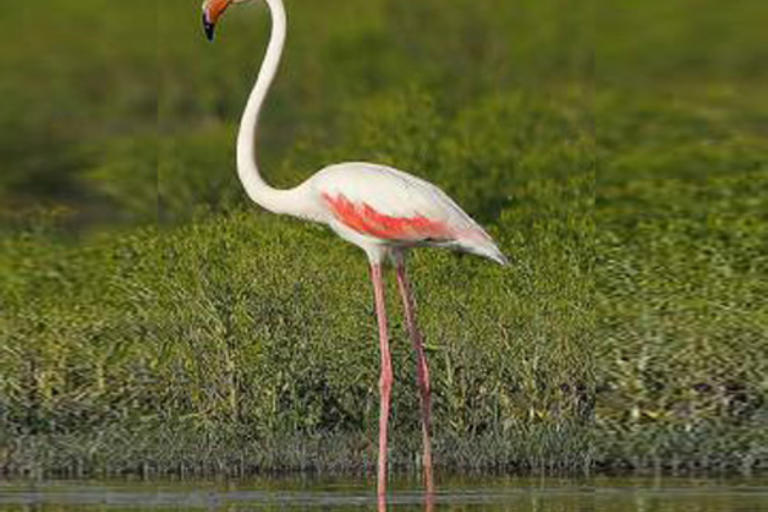

Visita · Roses
El Parc Natural dels Aiguamolls de l'Empordà (creat per la Llei 21/ 1983 , de 28 d'octubre, de protecció dels aiguamolls de l'Empordà) fou declarat zona protegida després d'una intensa i llarga…